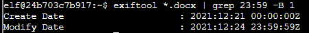

Terminals
Terminal: ExifMetada
(Talk to Piney Sappington)

- Grep the exiftool result of all files for 12-24 to find suspicious time stamps.
- Grep the exiftool result of all files for "23:59" and get the line right before it that shows the date the file was created, which is the file name in question.
exiftool *.docx | grep 23:59 -B 1
Terminal: Grepping for Gold
(Talk to Greasy Gopherguts)
Answer all the questions in the quizme executable:
What port does 34.76.1.22 have open?
cat bigscan.gnmap | grep 34.76.1.22
Answer: 62078
What port does 34.77.207.226 have open?
cat bigscan.gnmap | grep 34.77.207.226
Answer: 8080
How many hosts appear "Up" in the scan?
cat bigscan.gnmap | grep Up | wc -l
Answer: 26054
How many hosts have a web port open? (Let's just use TCP ports 80, 443, and 8080)
cat bigscan.gnmap | grep http | wc -l
Answer: 14372
How many hosts with status Up have no (detected) open TCP ports?
Subtract tcp from Up
cat bigscan.gnmap | grep Up | wc -l
cat bigscan.gnmap | grep tcp | wc -l
Answer: 402
What's the greatest number of TCP ports any one host has open?
cat bigscan.gnmap | awk '/80\/open/ {print $17}' | grep open
The 17th column shows the 12th open port and this is the last one that any host displays.
Answer: 12
Terminal: Logic Munchers
My son did this for me. He just went around as fast as he could with his mad gaming skills and grabbed every true thing he could find before the trolls got him.
Terminal: IPv6 Sandbox
Use hints from this Gist:
https://gist.github.com/chriselgee/c1c69756e527f649d0a95b6f20337c2f
We need to find the machine where the password is located.
Look for addresses in your subnet:
ping6 ff02::1 -c2
- fe80::42:57ff:fe11:b28%eth0
- fe80::42:c0ff:fea8:a002%eth0
Run nmap to see what ports they have open:
nmap -6 fe80::42:57ff:fe11:b28%eth0
- 22/tcp, 3000/tcp
nmap -6 fe80::42:c0ff:fea8:a002%eth0
- 80/tcp, 9000/tcp [
Hit the cslistener service with netcat:
nc -6 fe80::42:c0ff:fea8:a002%eth0 9000
password: PieceOnEarth
Terminal: Holiday Hero
Chimney Scissorsticks in Netwars Area
My son came in and told me to do the following:
- Don't spam the controls
- Don't keep hitting after notes after they've passed
- "Dad, you're lucky you got a good partner." (Apparently I'm not very good at this.)
Terminal: Frostavator
Terminal: Ho Ho ... No
echo "[custom_jail]
enabled = true
logpath = /var/log/hohono.log
findtime = 60m
maxretry = 10
bantime = 30m
filter = custom_filter
action = custom_action
" > /etc/fail2ban/jail.d/custom_jail.conf
echo "[Definition]
actionban = /root/naughtylist add <ip>
actionunban = /root/naughtylist del <ip>
" > /etc/fail2ban/action.d/custom_action.conf
echo "[Definition]
failregex = [Ll]ogin from <HOST> rejected
[Ff]ailed login from <HOST> for
[Ii]nvalid heartbeat\s'([^']*)'\sfrom\s<HOST>
<HOST> sent a malformed request
" > /etc/fail2ban/filter.d/custom_filter.conf
cat /etc/fail2ban/jail.d/custom_jail.conf
cat /etc/fail2ban/filter.d/custom_filter.conf
cat /etc/fail2ban/action.d/custom_action.conf
fail2ban-regex /var/log/hohono.log /etc/fail2ban/filter.d/custom_filter.conf
service fail2ban restart
/root/naughtylist refresh
Terminal: Yara Analysis
cat ./yara_rules/rules.yar
cat ./yara_rules/rules.yar | grep 'yara_rule_135 {' -A 10
meta:
description = "binaries - file Sugar_in_the_machinery"
author = "Sparkle Redberry"
reference = "North Pole Malware Research Lab"
date = "1955-04-21"
hash = "19ecaadb2159b566c39c999b0f860b4d8fc2824eb648e275f57a6dbceaf9b488"
strings:
$s = "candycane"
condition:
$s
```
**cat ./yara_rules/rules.yar | grep 'yara_rule_1056 {' -A 10 **
rule yara_rule_1056 { meta: description = "binaries - file frosty.exe" author = "Sparkle Redberry" reference = "North Pole Malware Research Lab" date = "1955-04-21" hash = "b9b95f671e3d54318b3fd4db1ba3b813325fcef462070da163193d7acb5fcd03" strings: $s1 = {6c 6962 632e 736f 2e36} $hs2 = {726f 6772 616d 2121} condition: all of them }
**cat ./yara_rules/rules.yar | grep 'yara_rule_1732 {' -A 10 **
```
rule yara_rule_1732 {
meta:
description = "binaries - alwayz_winter.exe"
author = "Santa"
reference = "North Pole Malware Research Lab"
date = "1955-04-22"
hash = "c1e31a539898aab18f483d9e7b3c698ea45799e78bddc919a7dbebb1b40193a8"
strings:
$s1 = "This is critical for the execution of this program!!" fullword ascii
$s2 = "__frame_dummy_init_array_entry" fullword ascii
$s3 = ".note.gnu.property" fullword ascii
$s4 = ".eh_frame_hdr" fullword ascii
$s5 = "__FRAME_END__" fullword ascii
$s6 = "__GNU_EH_FRAME_HDR" fullword ascii
$s7 = "frame_dummy" fullword ascii
$s8 = ".note.gnu.build-id" fullword ascii
$s9 = "completed.8060" fullword ascii
$s10 = "_IO_stdin_used" fullword ascii
$s11 = ".note.ABI-tag" fullword ascii
$s12 = "naughty string" fullword ascii
$s13 = "dastardly string" fullword ascii
$s14 = "__do_global_dtors_aux_fini_array_entry" fullword ascii
$s15 = "__libc_start_main@@GLIBC_2.2.5" fullword ascii
$s16 = "GLIBC_2.2.5" fullword ascii
$s17 = "its_a_holly_jolly_variable" fullword ascii
$s18 = "__cxa_finalize" fullword ascii
$s19 = "HolidayHackChallenge{NotReallyAFlag}" fullword ascii
$s20 = "__libc_csu_init" fullword ascii
condition:
uint32(1) == 0x02464c45 and filesize < 50KB and
10 of them
truncate -s +100000 the_critical_elf_app
./the_critical_elf_app
./the_critical_elf_app: error while loading shared libraries: libc/so.6: cannot open shared object file: No such file or directory
Machine Running..
Toy Levels: Very Merry, Terry
Naughty/Nice Blockchain Assessment: Untampered
Candy Sweetness Gauge: Exceedingly Sugarlicious
Elf Jolliness Quotient: 4a6f6c6c7920456e6f7567682c204f76657274696d6520417070726f766564
Terminal: IMDS Exploration
curl http://169.254.169.254/latest/meta-data/iam/security-credentials/elfu-deploy-role
"Code": "Success",
"LastUpdated": "2021-12-02T18:50:40Z",
"Type": "AWS-HMAC",
"AccessKeyId": "AKIA5HMBSK1SYXYTOXX6",
"SecretAccessKey": "CGgQcSdERePvGgr058r3PObPq3+0CfraKcsLREpX",
"Token": "NR9Sz/7fzxwIgv7URgHRAckJK0JKbXoNBcy032XeVPqP8/tWiR/KVSdK8FTPfZWbxQ==",
"Expiration": "2026-12-02T18:50:40Z"
curl -H "X-aws-ec2-metadata-token: $TOKEN" http://169.254.169.254/latest/meta-data/placement/region
Terminal: Strace Ltrace
ltrace ./make_the_candy
fopen("registration.json", "r") = 0
puts("Unable to open configuration fil"...Unable to open configuration file.
) = 35
+++ exited (status 1) +++
strace ./make_the_candy
execve("./make_the_candy", ["./make_the_candy"], 0x7fffb8ba06d0 /* 12 vars */) = 0
brk(NULL) = 0x55642b49e000
access("/etc/ld.so.nohwcap", F_OK) = -1 ENOENT (No such file or directory)
access("/etc/ld.so.preload", R_OK) = -1 ENOENT (No such file or directory)
openat(AT_FDCWD, "/etc/ld.so.cache", O_RDONLY|O_CLOEXEC) = 3
fstat(3, {st_mode=S_IFREG|0644, st_size=19540, ...}) = 0
mmap(NULL, 19540, PROT_READ, MAP_PRIVATE, 3, 0) = 0x7fcbb5834000
close(3) = 0
access("/etc/ld.so.nohwcap", F_OK) = -1 ENOENT (No such file or directory)
openat(AT_FDCWD, "/lib/x86_64-linux-gnu/libc.so.6", O_RDONLY|O_CLOEXEC) = 3
read(3, "\177ELF\2\1\1\3\0\0\0\0\0\0\0\0\3\0>\0\1\0\0\0\20\35\2\0\0\0\0\0"..., 832) = 832
fstat(3, {st_mode=S_IFREG|0755, st_size=2030928, ...}) = 0
mmap(NULL, 8192, PROT_READ|PROT_WRITE, MAP_PRIVATE|MAP_ANONYMOUS, -1, 0) = 0x7fcbb5832000
mmap(NULL, 4131552, PROT_READ|PROT_EXEC, MAP_PRIVATE|MAP_DENYWRITE, 3, 0) = 0x7fcbb521f000
mprotect(0x7fcbb5406000, 2097152, PROT_NONE) = 0
mmap(0x7fcbb5606000, 24576, PROT_READ|PROT_WRITE, MAP_PRIVATE|MAP_FIXED|MAP_DENYWRITE, 3, 0x1e7000) = 0x7fcbb5606000
mmap(0x7fcbb560c000, 15072, PROT_READ|PROT_WRITE, MAP_PRIVATE|MAP_FIXED|MAP_ANONYMOUS, -1, 0) = 0x7fcbb560c000
close(3) = 0
arch_prctl(ARCH_SET_FS, 0x7fcbb58334c0) = 0
mprotect(0x7fcbb5606000, 16384, PROT_READ) = 0
mprotect(0x55642a814000, 4096, PROT_READ) = 0
mprotect(0x7fcbb5839000, 4096, PROT_READ) = 0
munmap(0x7fcbb5834000, 19540) = 0
brk(NULL) = 0x55642b49e000
brk(0x55642b4bf000) = 0x55642b4bf000
openat(AT_FDCWD, "registration.json", O_RDONLY) = 3
fstat(3, {st_mode=S_IFREG|0644, st_size=0, ...}) = 0
read(3, "", 4096) = 0
fstat(1, {st_mode=S_IFCHR|0620, st_rdev=makedev(136, 0), ...}) = 0
write(1, "Unregistered - Exiting.\n", 24Unregistered - Exiting.
) = 24
exit_group(1) = ?
+++ exited with 1 +++
ltrace ./make_the_candy
fopen("registration.json", "r") = 0x561d0a628260
getline(0x7ffc50e863d0, 0x7ffc50e863d8, 0x561d0a628260, 0x7ffc50e863d8) = 2
strstr("{\n", "Registration") = nil
getline(0x7ffc50e863d0, 0x7ffc50e863d8, 0x561d0a628260, 0x7ffc50e863d8) = 20
strstr(" name: CottonCandy\n", "Registration") = nil
getline(0x7ffc50e863d0, 0x7ffc50e863d8, 0x561d0a628260, 0x7ffc50e863d8) = 2
strstr("}\n", "Registration") = nil
getline(0x7ffc50e863d0, 0x7ffc50e863d8, 0x561d0a628260, 0x7ffc50e863d8) = -1
puts("Unregistered - Exiting."Unregistered - Exiting.
) = 24
+++ exited (status 1) +++
registration.json
- "strstr" shows what string the program is looking for
- "strchr" shows what character the program is looking for
"Registration:True"
Terminal: The Elf C0de
Most of the information you'll need is provided during the game, but I'll give you a few more pointers, if you want them.
Not sure what a lever requires? Click it in the Current Level Objectives panel.
You can move the elf with commands like elf.moveLeft(5), elf.moveTo({"x":2,"y":2}), or elf.moveTo(lever0.position).
Looping through long movements? Don't be afraid to moveUp(99) or whatever. You elf will stop at any obstacle.
You can call functions like myFunction(). If you ever need to pass a function to a munchkin, you can use myFunction without the ().
import elf, munchkins, levers, lollipops, yeeters, pits
# Grab our lever object
lever = levers.get(0)
munchkin = munchkins.get(0)
lollipop = lollipops.get(0)
# move to lever position
elf.moveTo(lever.position)
# get lever int and add 2 and submit val
leverData = lever.data() + 2
lever.pull(leverData)
# Grab lollipop and stand next to munchkin
elf.moveLeft(1)
elf.moveUp(8)
# Solve the munchkin's challenge
munchList = munchkin.ask() # e.g. [1, 3, "a", "b", 4]
answer_list = []
for elem in munchList:
if type(elem) == int:
answer_list.append(elem)
munchkin.answer(answer_list)
elf.moveUp(2) # Move to finish
Level 1
import elf, munchkins, levers, lollipops, yeeters, pits
lollipop = lollipops.get(0)
elf.moveTo(lollipop.position)
elf.moveTo({"x":2,"y":2})
Level 2
import elf, munchkins, levers, lollipops, yeeters, pits
#lollipop = lollipops.get(1)
#elf.moveTo(lollipop.position)
lollipop = lollipops.get(1)
elf.moveTo(lollipop.position)
lollipop = lollipops.get(0)
elf.moveTo(lollipop.position)
elf.moveTo({"x":2,"y":2})
Level 3 You can walk past the Yeeter once you complete lever0's task and lever0.pull(modified_data) in the desired way to disable to Yeeter trap. Click on the lever 0 object in the CURRENT LEVEL OBJECTS panel for more information.
import elf, munchkins, levers, lollipops, yeeters, pits
lever0 = levers.get(0)
lollipop0 = lollipops.get(0)
elf.moveTo(lever0.position)
leverData = lever0.data()+2
lever0.pull(leverData)
elf.moveTo(lollipop0.position)
elf.moveTo({"x":2,"y":2})
Level 4
Objective
Submit ANY string object to this lever using lever.pull(string_object)
Note
If you submit a correct answer to lever.pull(answer), then the lever and its corresponding trap will be disabled.
In order to run lever.pull(answer) with lever (#4), you must be standing in its grid square located at (x:2,y:12).
This particular lever object can be saved to a variable named lever using lever = levers.get(4)
import elf, munchkins, levers, lollipops, yeeters, pits
lever0, lever1, lever2, lever3, lever4 = levers.get()
object_list = [3,2,1,0]
elf.moveLeft(2)
lever4.pull("A String")
for elem in object_list:
lollipop = lollipops.get(elem)
lever = levers.get(elem)
elf.moveUp(2)
leverData = lever.data()
lever.pull(leverData)
elf.moveTo({"x":2,"y":2})
Level 5
Objective
Pull all of the levers by submitting the requested data for each using lever.pull(data) to disable the Yeeter trap at the KringleCon entrance.
Hint
Move the elf to the lever. Get the lever data lever.data() and perform the appropriate action to the data. Submit the modified data using lever.pull(modified_data).
import elf, munchkins, levers, lollipops, yeeters, pits
lever0, lever1, lever2, lever3, lever4 = levers.get()
elf.moveLeft(2)
lever4.pull("undefined concatenate")
elf.moveUp(2)
lever3.pull(True)
elf.moveUp(2)
x = lever2.data()
lever2.pull(x+1)
elf.moveUp(2)
y = lever1.data()
y.append(1)
lever1.pull(y)
elf.moveUp(2)
z = lever0.data()
z["strkey"]= "strvalue"
lever0.pull(z)
elf.moveUp(2)
Level 6
Objective
Move the elf to the lever. Get the lever data lever.data() and perform the appropriate action to the data. Submit the modified data using lever.pull(modified_data).
Hints
This level requires the use of operators to compare and modify data. This link on operators should help.
https://www.freecodecamp.org/news/the-python-guide-for-beginners/#operators
Data types will also need to be checked using conditionals in if, elif, else statements. This link on conditionals should help.
https://www.freecodecamp.org/news/the-python-guide-for-beginners/#operators
You will also need to use conditionals to check data types. This link on types should help.
https://www.freecodecamp.org/news/the-python-guide-for-beginners/#types
For example, if you want to check the type of a variable, you could use:
if type(var) == str:
print("Its a string!")
Calling lever.data() will return a boolean, a number, a list of integers, a string, or a dict with "a" and an integer to you. For a boolean, return the inverse. For a number, return double the number. For a list of integers, return that list with each integer incremented by 1. For a string, return the string concatenated with itself. For a dict, return the dict with a's value + 1. Submit this response using lever.pull(conditional_answer) .
- Move elf to lever
elf.moveUp(2)
- Get lever data
leverData = lever.data()
-
Perform action to data
- for boolean, return the inverse
print(type(data))- for number, return double the number
- for list of integers, return list with each integer incremented by one
- for string return string concatenated with itself
-
for dict return dict with a's value + 1
-
lever.pull("foo") - Submit modified data --> "lever.pull(modified_data)"
-
Only handled for the first condition. Need to handle for all conditions listed *
import elf, munchkins, levers, lollipops, yeeters, pits
# Fix/Complete the below code
lever = levers.get(0)
data = lever.data()
if type(data) == bool:
data = not data
elf.moveUp(2)
lever.pull(data)
elf.moveUp(2)
elif type(data) == int:
data = data * 2
elif type(data) == list:
print(data)
for i in range(len(data)):
data[i] += 1
Level 7
Objective
Navigate through the obstacles and collect the lollipop before arriving at the KringleCon entrance.
Hints
Using a for loop can reduce how many lines and/or object function calls are used. This link on for loops may be helpful.
Using elf.moveLeft(40) will move your elf as far as possible before hitting an obstacle or the end of the screen. Use however large a number you think you need!
import elf, munchkins, levers, lollipops, yeeters, pits
elf.moveLeft(1)
elf.moveUp(11)
elf.moveLeft(2)
elf.moveDown(11)
elf.moveLeft(2)
elf.moveUp(11)
elf.moveLeft(2)
elf.moveDown(11)
elf.moveLeft(3)
elf.moveUp(10)
Level 8
Objective
Navigate past the obstacles and avoid the munchkin watching the KringleCon entrance.
Hints
Reduce the number of lines necessary to reach the KringleCon entrance by using a loop. This link on for loops will be helpful.
There are two paths for you to choose from. Choosing the lever takes more steps but may be easier to solve.
import elf, munchkins, levers, lollipops, yeeters, pits
all_lollipops = lollipops.get()
for lollipop in all_lollipops:
lollipop = lollipops.get(0)
elf.moveTo(lollipop.position)
lever = levers.get(0)
elf.moveTo(lever.position)
data = lever.data()
data[:0] = ["munchkins rule"]
lever.pull(data)
elf.moveTo({"x":8,"y":4})
elf.moveTo({"x":2,"y":2})
Level 9
Objective
Follow the swirl being careful not to step on any traps (or get yeeted off the map). Note: The elf.moveTo(object) function has been disabled for this challenge.
Hint
Use loops and an incrementing count to take the exact number of steps. Some sample code has been started for you but needs to be fixed/finished.